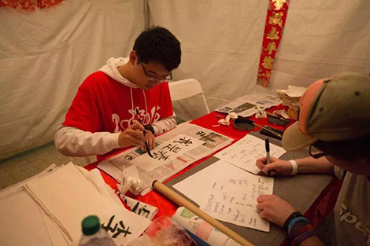
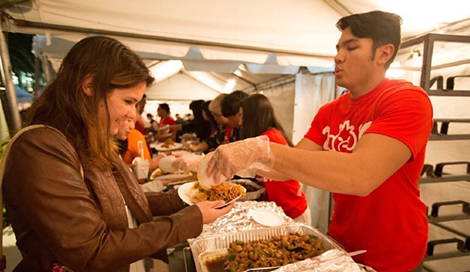
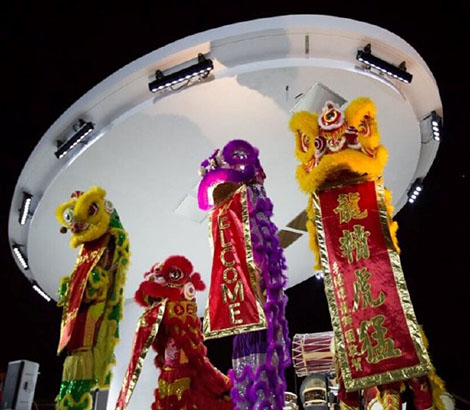

Instructor: Dr. Colee Splichal
CORAL GABLES, Fla. (Feb. 16, 2016) – It was 7 p.m., but the University Center Lakeside Patio at the University of Miami was loaded with people --- unusual for a Monday night. Smiles filled the festive atmosphere. Around 20 white tents provided bright scenery to mark the fifth annual Lunar New Year Celebration in honor of the Year of the Monkey, Feb. 15 on the Chinese calendar.
Organized by the Chinese Students and Scholars Association, Asian American Students Association and Hong Kong Students Association, the Chinese Lunar New Year Celebration was divided into three parts: tent display, food supply and evening show. More than 600 people on-campus and off-campus shared the fun of recognizing the Year of the Monkey.
At 6 p.m., the white tents decorated with red lanterns and colored lights opened, marking the beginning of the events. They showcased diverse Chinese cultural activities including making Chinese tea, writing in Chinese calligraphy and learning traditional Chinese paper-cut.
“All the activities were amazing, and I enjoyed them a lot,” said Andres Talero, a UM senior in the College of Arts and Sciences. “I am interested in Chinese culture, and I studied in the Chinese University of Hong Kong as an exchange student last year. These activities made me miss life in China.”
When participants engaged in each activity in the tents, they received a letter from the word “monkey.” Once they collected all six letters, they were invited to eat traditional Asian food.
The free food was supplied at 7 p.m. in two tents. Sushi Maki’s staff offered sushi and CSSA staff offered traditional Chinese food such as rice, noodles and dumplings sponsored by the Chop Suey Restaurant. People lined up outside the tents.
“The food was great, similar to authentic Chinese traditional food, especially the dumplings,”said Qi Zhang, a Chinese UM student who celebrated the Lunar New Year away from home for the first time.
“The food made me feel at home, so it reduced my homesickness. I appreciated the CSSA’s holding the event.”
From 8-9 p.m., guests enjoyed the show, featuring the traditional Chinese Lion Dance, acrobatic performances and traditional martial arts. Five UM students played traditional Chinese instruments and a professional acrobat balanced atop four stacked chairs. Eight Chinese students demonstrated street dances to the song “Reflection” and a Chinese pop song, which brought the evening to a tuneful climax.
“The show was fantastic, even more interesting than shows in China,” said Yiying Yang, a Chinese student majoring in higher education administration. “The acrobat who could balance on top of four chairs was unbelievable. But the street dance was my favorite, especially with the Chinese pop song.”
“I think it was a great and successful event,” said Zhuoying Lin, CSSA president and the main person responsible for the event. “There was a sea of people on the UC Lakeside Patio throughout the evening, especially the food supply time --- not only UM students but also people from the neighborhood participated in our event to celebrate the Chinese Lunar New Year.
“I am very grateful to all CSSA staff for their contributions tonight.”